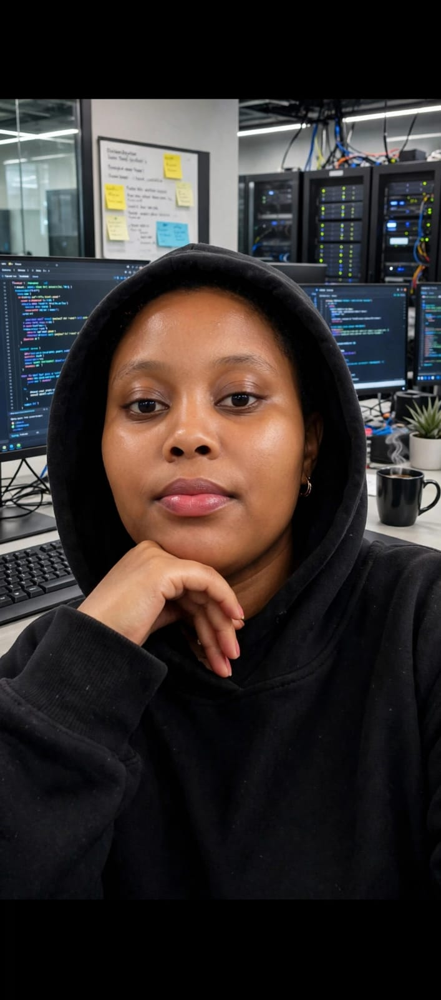

Programming
Python and writing application logic.
COMPUTER SCIENCE · ALWAYS LEARNING
I'm a Computer Science student exploring software development, cybersecurity, and the technology that makes a difference in the real world.
Curious mind. Practical projects. Continuous growth.

01 / A LITTLE ABOUT ME
I'm Stacy Macharia, a Computer Science student developing my skills through hands-on projects. I enjoy understanding how technology works and turning ideas into useful applications.
I'm especially interested in cybersecurity, but I'm also exploring other areas of computing. I'm keeping an open mind while learning, building, experimenting, and discovering where my strengths can make the biggest difference.
02 / MY TOOLKIT
My toolkit grows with every project and new concept I learn.
Python and writing application logic.
HTML, CSS, and building websites.
SQLite and storing application data.
VS Code, Git, and GitHub.
These are current areas of practice, not a claim of professional expertise.
03 / THE PROJECT LAB
Real projects, lessons learned, and progress you can explore in the source code.
A Python application designed to help people report lost and found belongings, identify potential matches, manage claims, and receive notifications.
Explore project repository ↗This gallery loads public repositories from my GitHub account, so it can grow as I create more projects.
04 / WHAT'S NEXT
I'm exploring different areas of Computer Science while building a strong technical foundation.
Learning about digital security, safe computing, networks, and ethical security practices.
AREA OF INTERESTImproving my ability to design, build, test, and maintain useful applications.
BUILDING SKILLSExploring different computing fields and discovering what I want to specialize in.
EXPLORING05 / LET'S CONNECT
Interested in my work, have a project idea, or want to connect about technology? Find me on GitHub.
Find me on GitHub ↗Add your professional email here when you're ready.